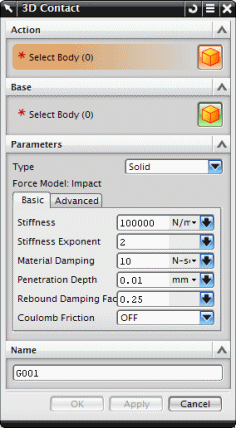

RecurDyn 实体3D 接触类型将在配对的实体接触时在它们之间生成力。接触体(亦即由于穿透而重叠在一起的体)为实体。
对于大多数构建接触的情况，您可以在基本选项卡中定义参数，比如刚度、材料阻尼，而无须更改高级选项卡中的默认参数设置。

|
注释 |
小平面以及拟合类型的接触向后兼容在 NX 6.0中创建的运动机构。 |
接触的配对体中的第一个实体，称为操作体，其中必须包含连杆，第二个实体T称为基本体，不必包含连杆。
接触的配对体必须为实体，而不能使用其它几何体，比如曲线或点。